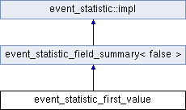

Inheritance diagram for event_statistic_first_value:

Classes | |
| struct | state |
Public Member Functions | |
| cata_variant | value (stats_tracker &stats) const override |
| std::unique_ptr< stats_tracker_state > | watch (stats_tracker &stats) const override |
| monotonically | monotonicity () const override |
| std::unique_ptr< impl > | clone () const override |
| event_statistic_field_summary (const string_id< event_statistic > &i, std::unique_ptr< event_source > s, const std::string &f) | |
 Public Member Functions inherited from event_statistic_field_summary< false > Public Member Functions inherited from event_statistic_field_summary< false > | |
| event_statistic_field_summary (const string_id< event_statistic > &i, std::unique_ptr< event_source > s, const std::string &f) | |
| void | check (const std::string &name) const override |
| cata_variant_type | type () const override |
| Public Member Functions inherited from event_statistic::impl | |
| virtual | ~impl ()=default |
Additional Inherited Members | |
| Public Attributes inherited from event_statistic_field_summary< false > | |
| string_id< event_statistic > | id |
| cata::clone_ptr< event_source > | source |
| std::string | field |
Detailed Description
Definition at line 1079 of file event_statistics.cpp.
Member Function Documentation
◆ clone()
|
inlineoverridevirtual |
Implements event_statistic::impl.
Definition at line 1143 of file event_statistics.cpp.
◆ event_statistic_field_summary()
|
inline |
Definition at line 801 of file event_statistics.cpp.
cata::clone_ptr< event_source > source
Definition: event_statistics.cpp:808
string_id< event_statistic > id
Definition: event_statistics.cpp:807
◆ monotonicity()
|
inlineoverridevirtual |
Implements event_statistic::impl.
Definition at line 1135 of file event_statistics.cpp.
@ constant
@ unknown
virtual bool is_game_start() const =0
References constant, event_source::is_game_start(), event_statistic_field_summary< false >::source, and unknown.
◆ value()
|
inlineoverridevirtual |
Implements event_statistic::impl.
Definition at line 1082 of file event_statistics.cpp.
Definition: cata_variant.h:434
Definition: stats_tracker.h:58
std::optional< summaries_type::value_type > first() const
Definition: stats_tracker.cpp:166
virtual event_multiset get(stats_tracker &stats) const =0
References event_multiset::first(), event_source::get(), and event_statistic_field_summary< false >::source.
Referenced by event_statistic_first_value::state::init().
◆ watch()
|
inlineoverridevirtual |
Implements event_statistic::impl.
Definition at line 1131 of file event_statistics.cpp.
The documentation for this struct was generated from the following file: